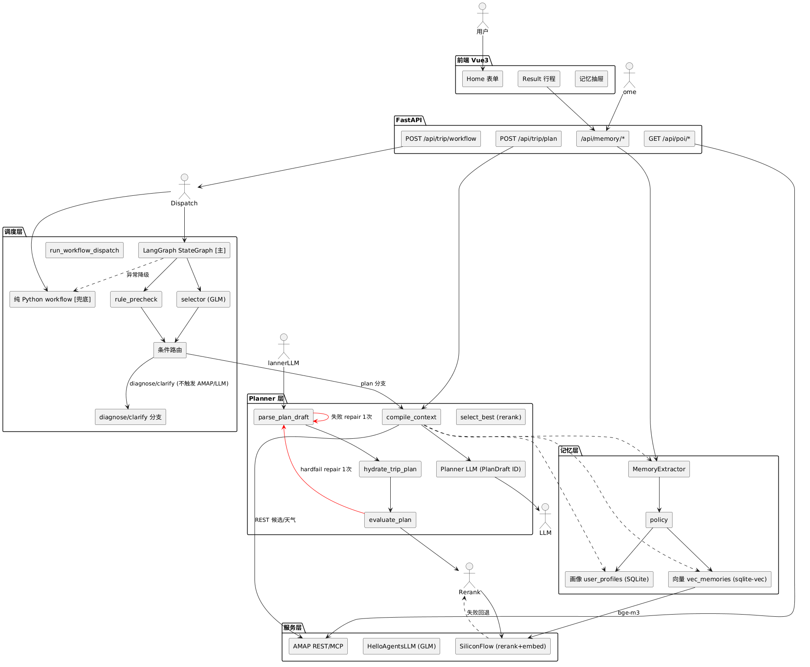

项目简介
基于多 Agent 编排构建的可信智能旅行规划系统，依托高德真实 POI 数据源与 LLM 能力实现行程生成闭环，通过候选 ID 约束、规则硬校验、受控自修复与用户记忆机制，保障行程可验证、可降级、高可靠，完成 AI 能力工程化落地。
技术栈
FastAPI、Vue3、LangGraph、GLM-4-flash、高德 AMAP、SQLite + sqlite-vec、Python、TypeScript
技术亮点
反幻觉 Grounding 体系
采用 ID 化 PlanDraft 方案——LLM 仅输出候选 ID，真实 POI 由后端延迟回填；通过代码硬规则校验实体一致性（坐标 / poi_id / 地址）、行程约束（天数 / 三餐 / 预算 / 酒店晚数），候选不足直接失败，杜绝虚构景点、坐标等幻觉问题。
选择器调度 + LangGraph 双轨编排
低成本规则预筛结合 GLM 意图识别，条件路由至 plan / diagnose / clarify 等分支；以 LangGraph StateGraph 为主引擎，异常自动降级到原生 Python 工作流；配合 AMAP 连接池、两级缓存、限流重试与外部依赖非阻断降级，兼顾编排灵活度与稳定性。
多候选生成 + 混合重排策略
compact / balanced / coverage 多策略产出差异化候选，融合规则分与 BGE-reranker 模型语义重排分，分数接近时用多样性择优，改善单次生成不稳定、候选同质化问题。
可控长期记忆系统
基于 sqlite-vec + BGE-M3 构建结构化画像 + 向量双轨记忆，规划时注入用户偏好摘要；增设 memory_boundary 硬约束——记忆仅影响偏好与排序、不新增候选外实体，当前输入优先于历史，平衡个性化与防幻觉。
自修复 + 量化评测闭环
解析或规则校验失败时复用同一候选上下文执行单次受控 Repair，修复后重新评估、指标优化才替换；评测采用固定 Fixture + 真实链路 eval 脚本，代码规则裁判输出 hardpass / soft_score 等指标，模型与提示词改动靠评测横向对比，数据驱动迭代。
系统架构图

界面展示